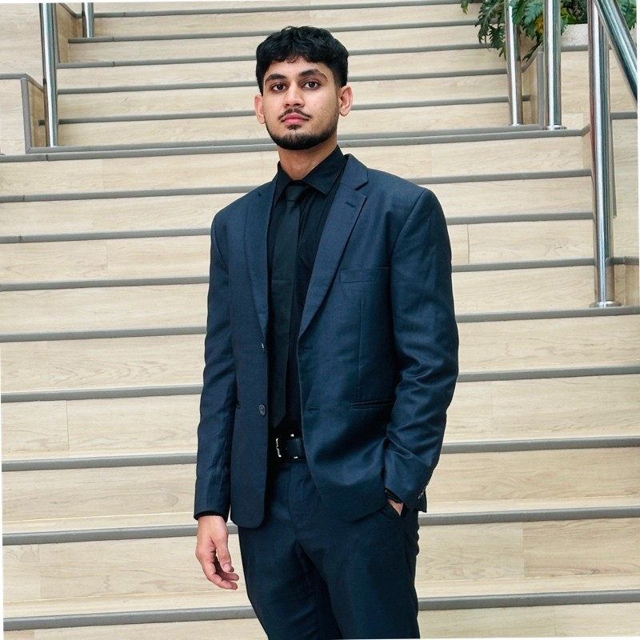

- Scaled an early agentic prototype into a stable product supporting a rapidly growing user base.
- Designed parallel tool-calling workflows, reducing average response latency by 35%.
- Built persistent shared memory, lowering long-term context overhead by 25%.
- Modeled 1M+ node knowledge graphs with sub-50ms multi-hop queries.
- Combined RAG with graph traversal to improve grounded precision by 18%.
- Added production observability, cutting incident recovery time by 30%.
AI ENGINEER · DUBAI, UAE
I build AI that holds up.
Agentic systems, knowledge graphs, and retrieval pipelines designed for the part after the demo—when reliability, latency, and cost start to matter.

ABDULLAH.TAUFIQ / 2026Build.Ship.
Iterate
Iterate
01 / EXPERIENCE
Built in the real world.
My work lives where LLM research meets production engineering: orchestration, retrieval, memory, evaluation, and the infrastructure around them.
I started close to people and operations. That perspective still shapes how I engineer: technology is only useful when the person at the other end can depend on it.
SELECT A ROLE TO EXPAND →- Explored retrieval-augmented generation and document chunking strategies for efficient, relevant LLM context.
- Worked through the edge cases that turn a RAG concept into a dependable production pipeline.
- Led a frontline team at Dubai Airports, improving resolution quality, customer satisfaction, and team performance in a fast-moving environment.
02 / SYSTEM MAP
How I think about AI products.
Not as isolated models, but as connected systems. Hover or tap to explore the layers I work across.
Agents & orchestration
Multi-agent workflows, tool calling, persistent memory, streaming, and useful control loops.
RAG & knowledge
GraphRAG, hybrid search, chunking, embeddings, and answers traceable to evidence.
Graphs & vectors
Neo4j, FalkorDB, Qdrant, FAISS, OpenCypher, and fast multi-hop traversal.
Evaluation & MLOps
LLM-as-judge, hallucination detection, MLflow, Datadog, PostHog, and feedback loops.
Backend & automation
Python, FastAPI, n8n, Redis, APIs, event-driven workflows, and product plumbing.
Reliable infrastructure
Docker, CI/CD, PII masking, injection mitigation, cost control, and graceful recovery.
03 / PRINCIPLES
The details decide whether it works.
Grounded over impressive.
An answer that can show its work beats one that merely sounds confident.
Measure the whole loop.
Quality, latency, cost, and recovery are product features—not afterthoughts.
Design for the operator.
The best system is understandable and recoverable by the people running it.
04 / EDUCATION
Built on strong foundations.
BSc Computer Science, Artificial Intelligence
Swinburne University of Technology · Sarawak, Malaysia
3.25
A-Levels
Arab Unity School · Mathematics A · Physics A · IT A · English B
AAA